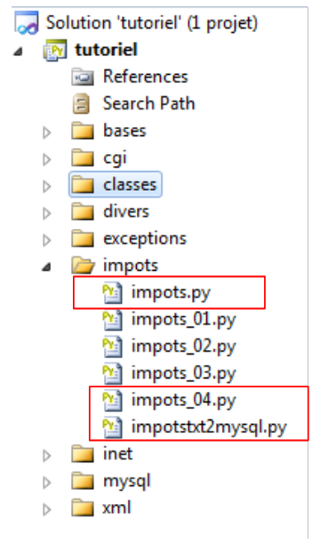

10. Aufgabe [IMPOTS] mit MySQL
 |
10.1. Übertragung einer Textdatei in eine Tabelle MySQL
Das folgende Skript überträgt die Daten aus der folgenden Textdatei:
12620:13190:15640:24740:31810:39970:48360:55790:92970:127860:151250:172040:195000:0
0:0.05:0.1:0.15:0.2:0.25:0.3:0.35:0.4:0.45:0.5:0.55:0.6:0.65
0:631:1290.5:272.5:3309.5:4900:6898.5:9316.5:12106:16754.5:23147.5:30710:39312:49062
in die Tabelle [impots] der folgenden Datenbank MySQL [dbimpots]:
 |
Die Verbindung zur Datenbank [dbimpots] erfolgt mit der Identität (root,"").
Wir werden die folgende Architektur verwenden:
 |
Das Skript [console], das wir erstellen werden, nutzt die Klasse [ImpotsFile], um auf die Daten der Textdatei zuzugreifen. Der Schreibzugriff auf die Datenbank erfolgt über die zuvor beschriebenen Methoden.
Der Code des Skripts lautet wie folgt:
# -*- coding=utf-8 -*-
# Import des Moduls „Steuerklassen“
from impots import *
import re
# --------------------------------------------------------------------------
def copyToMysql(limites,coeffR,coeffN,HOTE,USER,PWD,BASE,TABLE):
# Kopiert die 3 Tabellen mit den numerischen Grenzwerten: coeffR, coeffN
# in die Tabelle TABLE der MySQL-Datenbank BASE
# Die MySQL-Datenbank befindet sich auf dem Rechner HOTE
# Der Benutzer wird durch USER und PWD identifiziert
# Die Abfragen SQL werden in eine Liste aufgenommen
# Löschen der Tabelle
requetes=["drop table %s" % (TABLE)]
# Erstellung der Tabelle
requete="create table %s (limites decimal(10,2), coeffR decimal(6,2), coeffN decimal(10,2))" % (TABLE)
requetes.append(requete)
# Befüllung
for i in range(len(limites)):
# Einfügeabfrage
requetes.append("insert into %s (limites,coeffR,coeffN) values (%s,%s,%s)" % (TABLE,limites[i],coeffR[i],coeffN[i]))
# die Befehle werden ausgeführt SQL
return executerCommandes(HOTE,USER,PWD,BASE,requetes,False,False)
def executerCommandes(HOTE,ID,PWD,BASE,requetes,suivi=False,arret=True):
# Verwendet die Verbindung (HOTE,ID,PWD,BASE)
# führt über diese Verbindung die in der Anforderungsliste enthaltenen Befehle SQL aus
# Wenn „Verfolgung“=True ist, wird bei jeder Ausführung eines Befehls SQL eine Meldung angezeigt, die angibt, ob der Befehl erfolgreich war oder fehlgeschlagen ist
# Wenn „Stopp=False“, bricht die Funktion beim ersten aufgetretenen Fehler ab, andernfalls führt sie alle SQL-Befehle aus
# Die Funktion gibt eine Liste zurück (Anzahl der Fehler, Fehler1, Fehler2, …)
# Verbindung
try:
connexion=MySQLdb.connect(host=HOTE,user=ID,passwd=PWD,db=BASE)
except MySQLdb.OperationalError,erreur:
return [1,"Erreur lors de la connexion a MySQL sous l'identite (%s,%s,%s,%s) : %s" % (HOTE, ID, PWD, BASE, erreur)]
# Ein Cursor wird angefordert
curseur=connexion.cursor()
# Ausführung der in der Liste „requetes“ enthaltenen Abfragen SQL
# Sie werden ausgeführt – zunächst keine Fehler
erreurs=[0]
for i in range(len(requetes)):
# Die Abfrage wird in eine lokale Variable gespeichert
requete=requetes[i]
# Ist die Abfrage leer?
if re.match(r"^\s*$",requete):
continue
# Ausführung der Abfrage i
erreur=""
try:
curseur.execute(requete)
except Exception, erreur:
pass
# Ist ein Fehler aufgetreten?
if erreur:
# Ein weiterer Fehler
erreurs[0]+=1
# Fehlermeldung
msg="%s : Erreur (%s)" % (requete[0:len(requete)-1],erreur)
erreurs.append(msg)
# Bildschirmüberwachung ja oder nein?
if suivi:
print msg
# Wird der Vorgang abgebrochen?
if arret:
return erreurs
else:
if suivi:
# Die Abfrage wird ohne Zeilenendezeichen angezeigt
print "%s : Execution reussie" % (cutNewLineChar(requete))
# Informationen zum Ergebnis der ausgeführten Abfrage
afficherInfos(curseur)
# Verbindung schließen
try:
connexion.commit()
connexion.close()
except MySQLdb.OperationalError,erreur:
# Ein weiterer Fehler
erreurs[0]+=1
# Fehlermeldung
msg="%s : Erreur (%s)" % (requete,erreur)
erreurs.append(msg)
# Zurück
return erreurs
# ------------------------------------------------ Hauptprogramm
# Benutzeridentität
USER="root"
PWD=""
# der Host-Rechner des DBMS
HOTE="localhost"
# Identität der Datenbank
BASE="dbimpots"
# Identität der Datentabelle
TABLE="impots"
# die Datendatei
IMPOTS="impots.txt"
# Instanziierung der Schicht [dao]
try:
dao=ImpotsFile(IMPOTS)
except (IOError, ImpotsError) as infos:
print ("Une erreur s'est produite : {0}".format(infos))
sys.exit()
# Die abgerufenen Daten werden in eine MySQL-Tabelle übertragen
erreurs=copyToMysql(dao.limites,dao.coeffR,dao.coeffN,HOTE,USER,PWD,BASE,TABLE)
if erreurs[0]:
for i in range(1,len(erreurs)):
print erreurs[i]
else:
print "Transfert opere"
# Ende
sys.exit()
Anmerkungen:
- Zeilen 106–110: Wir instanziieren die in Abschnitt 8.1 vorgestellte Klasse [ImpotsFile];
- Zeile 113: Die Arrays limites, coeffR und coeffN werden in eine Datenbank MySQL übertragen;
- Zeile 8: Die Funktion copyToMysql führt diese Übertragung durch. Die Funktion copyToMysql erstellt eine Tabelle der auszuführenden Abfragen und lässt diese von der Funktion executerCommandes ausführen (Zeile 25);
- Zeilen 28–89: Die Funktion executerCommandes ist die bereits zuvor in Abschnitt 9.7 vorgestellte Funktion, mit einem Unterschied: Anstatt in einer Textdatei zu liegen, befinden sich die Abfragen in einer Liste;
Die Textdatei impots.txt:
12620:13190:15640:24740:31810:39970:48360:55790:92970:127860:151250:172040:195000:0
0:0.05:0.1:0.15:0.2:0.25:0.3:0.35:0.4:0.45:0.5:0.55:0.6:0.65
0:631:1290.5:272.5:3309.5:4900:6898.5:9316.5:12106:16754.5:23147.5:30710:39312:49062
Die Bildschirmausgaben:
Überprüfung mit phpMyAdmin:
|
10.2. Das Programm zur Steuerberechnung
Da nun die für die Steuerberechnung erforderlichen Daten in einer Datenbank vorliegen, können wir das Skript zur Steuerberechnung schreiben. Wir verwenden erneut eine dreischichtige Architektur:
 |
Die neue Schicht [dao] wird mit SGBD und MySQL verbunden und durch die Klasse [ImpotsMySQL] implementiert. Sie wird der Schicht [metier] dieselbe Schnittstelle wie zuvor bereitstellen, bestehend aus der einzigen Methode getData, die das Tupel (Grenzwerte, coeffR, coeffN) zurückgibt. Somit bleibt die Schicht [metier] gegenüber der vorherigen Version unverändert.
10.3. Die Klasse [ImpotsMySQL]
Die Schicht [dao] wird nun durch die folgende Klasse [ImpotsMySQL] (Datei impots.py) implementiert:
class ImpotsMySQL:
# Konstruktor
def __init__(self,HOTE,USER,PWD,BASE,TABLE):
# initialisiert die Grenzwerte, coeffR, coeffN
# Die für die Steuerberechnung erforderlichen Daten wurden in die Tabelle mysqL TABLE
# der Datenbank BASE. Die Tabelle hat folgende Struktur
# Grenzwerte decimal(10,2), coeffR decimal(10,2), coeffN decimal(10,2)
# Die Verbindung zur MySQL-Datenbank des Rechners HOTE erfolgt unter der Identität (USER,PWD)
# löst bei einem eventuellen Fehler eine Ausnahme aus
# Verbindung zur MySQL-Datenbank
connexion=MySQLdb.connect(host=HOTE,user=USER,passwd=PWD,db=BASE)
# ein Cursor wird angefordert
curseur=connexion.cursor()
# Blockweises Auslesen der Tabelle TABLE
requete="select limites,coeffR,coeffN from %s" % (TABLE)
# führt die Abfrage [requete] in der Datenbank [base] der Verbindung [connexion] aus
curseur.execute(requete)
# Auswertung des Abfrageergebnisses
ligne=curseur.fetchone()
self.limites=[]
self.coeffR=[]
self.coeffN=[]
while(ligne):
# aktuelle Zeile
self.limites.append(ligne[0])
self.coeffR.append(ligne[1])
self.coeffN.append(ligne[2])
# nächste Zeile
ligne=curseur.fetchone()
# Abmeldung
connexion.close()
def getData(self):
return (self.limites, self.coeffR, self.coeffN)
Anmerkungen:
- Zeile 18: Die Abfrage SQL SELECT, die Daten aus der Datenbank MySQL abfragt. Die Ergebniszeilen von SELECT werden anschließend einzeln von [curseur.fetchone] (Zeilen 22 und 32) verarbeitet, um die Tabellen limites, coeffR und coeffN (Zeilen 28–30) zu erstellen;
- die Methode getData der Schnittstelle der Schicht [dao].
10.4. Das Konsolenskript
Der Code des Konsolenskripts (impots_04) lautet wie folgt:
# -*- coding=utf-8 -*-
# Import des Moduls „Impots*“
from impots import *
# ------------------------------------------------ main
# Benutzeridentität
USER="root"
PWD=""
# Host-Rechner des DBMS
HOTE="localhost"
# Identität der Datenbank
BASE="dbimpots"
# ID der Datentabelle
TABLE="impots"
# Eingabedatei
DATA="data.txt"
# Ausgabedatei
RESULTATS="resultats.txt"
# Instanzierung der Schicht [metier]
try:
metier=ImpotsMetier(ImpotsMySQL(HOTE,USER,PWD,BASE,TABLE))
except (IOError, ImpotsError) as infos:
print ("Une erreur s'est produite : {0}".format(infos))
sys.exit()
# Die für die Steuerberechnung erforderlichen Daten wurden in die Datei IMPOTS
# mit jeweils einer Zeile pro Tabelle in der Form
# val1:val2:val3,...
# Einlesen der Daten
try:
data=open(DATA,"r")
except:
print "Impossible d'ouvrir en lecture le fichier des donnees [DATA]"
sys.exit()
# Ergebnisdatei öffnen
try:
resultats=open(RESULTATS,"w")
except:
print "Impossible de creer le fichier des résultats [RESULTATS]"
sys.exit()
# Dienstprogramme
u=Utilitaires()
# die aktuelle Zeile der Datendatei wird verarbeitet
ligne=data.readline()
while(ligne != ''):
# Eventuelles Zeilenendezeichen wird entfernt
ligne=u.cutNewLineChar(ligne)
# Die drei Felder „verheiratet:Kinder:Gehalt“, aus denen die Zeile besteht, werden abgerufen
(marie,enfants,salaire)=ligne.split(",")
enfants=int(enfants)
salaire=int(salaire)
# Die Steuer wird berechnet
impot=metier.calculer(marie,enfants,salaire)
# Das Ergebnis wird eingetragen
resultats.write("{0}:{1}:{2}:{3}\n".format(marie,enfants,salaire,impot))
# eine neue Zeile wird gelesen
ligne=data.readline()
# Die Dateien werden geschlossen
data.close()
resultats.close()
Hinweise:
- Zeile 23: Instanziierung der Schichten [dao] und [metier];
- Der restliche Code ist bekannt.
Die gleichen wie bei den vorherigen Versionen der Übung.